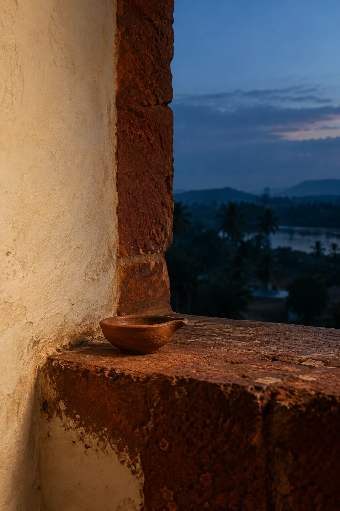

 Kabita Live
Kabita Live
Issue 38
December 2025
Browse poemsEnough light for one room
The lamp does not try to illuminate the entire night. It keeps one small circle warm: a wall, a pair of waiting hands, the place where a story might be told. Outside, darkness continues. Inside, there is enough light for someone to feel that they have been expected.
Cultural connection
An everyday earthen oil lamp, approached through intimacy rather than a claim about a particular ceremony.
Reader tools
Language
Text size
Choose a language for the titles and the poems you open.
ମାଆ ଚୁପ୍ ହୋଇଯିବା ମାନେ
ଭୋକର ଅନ୍ୟନାମ
 Original: Odia
Original: Odiaजीवन धार जहाँ ले जाती है
 Original: Hindi
Original: Hindiजीवन जंग नही
बस यूँ ही
 Original: Hindi
Original: HindiThe Girl Who Walks in My Ink
 Original: English
Original: EnglishDilemma
LOGO
 Original: English
Original: EnglishI woke up thinking about you
The feelings beneath the words
Needs of Gender Studies
 Original: English
Original: English